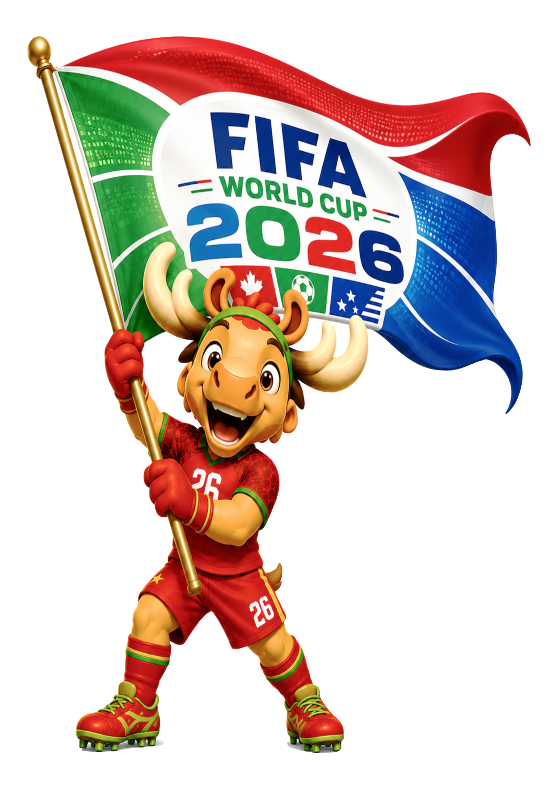
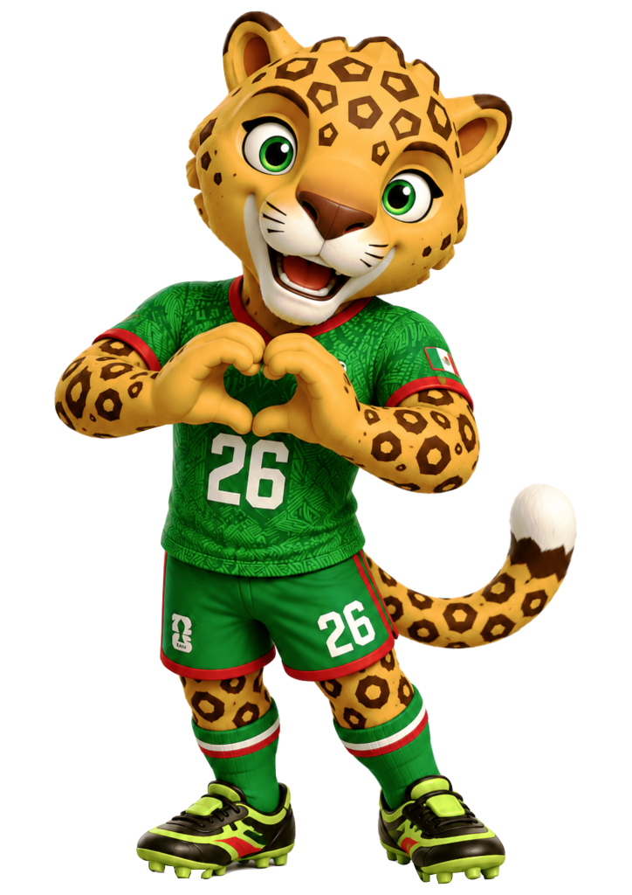
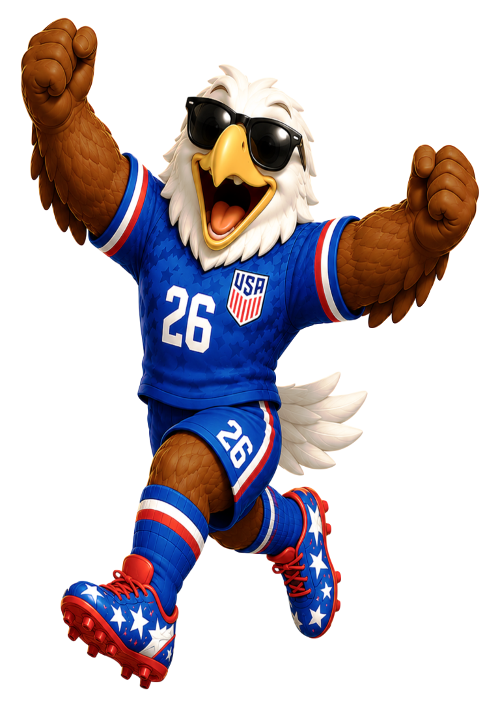

Carregando os palcos…

Palcos da Copa 26
A primeira Copa em três países: 16 estádios, 104 jogos, mascotes e a bola oficial. Toque nos cards para conhecer cada palco.
Os 16 estádios
Mascotes oficiais

Maple™
O alce do Canadá 🇨🇦 — goleiro de alma artística.

Zayu™
O jaguar do México 🇲🇽 — atacante que celebra a cultura do país.

Clutch™
A águia dos EUA 🇺🇸 — meio-campista que adora viajar.
A bola oficial
TRIONDA™
A bola oficial da Copa 26 celebra os três países-sede: quatro painéis em ondas que se encontram como as três nações, com vermelho, verde e azul, a folha de bordo 🇨🇦, a águia 🇺🇸 e o desenho asteca 🇲🇽 gravados no design.
- Quatro painéis em formato de onda ("la ola")
- Ícones dos três países-sede no grafismo
- Textura e tecnologia para precisão e estabilidade
Aviso legal: FIFA World Cup 26™, a bola TRIONDA™, os mascotes Maple™, Zayu™ e Clutch™, bem como mascotes, bolas oficiais, troféus, logotipos, personagens e designs de edições anteriores, são marcas, obras e criações da FIFA, de seus licenciados e fabricantes oficiais (bolas: adidas). Sua exibição aqui — em imagens de baixa resolução — ocorre exclusivamente em contexto histórico, informativo e editorial, em site gratuito e sem monetização, sem afiliação, patrocínio, endosso, venda ou exploração comercial. Todos os direitos reservados aos respectivos titulares. Solicitações de remoção: canal “💬 Sugestões”.